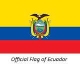

About Me
Hi everyone! this is my second BYU-I course and I'm so excited to learn to code in HTML and CSS. I'm pursuing a degree in Applied Technology, I want to be a Full Stack Web Developer. I'm single, I have been a member of the church since a was 11yo and I love to swim, watch movies and travel. Nice to meet Y'all!!
Guayaquil, Ecuador

Guayaquil, officially Santiago de Guayaquil, is the largest city in Ecuador and also the nation's economic capital and main port. The city is the capital of Guayas Province and the seat of Guayaquil Canton. The city is located on the west bank of the Guayas River, which flows into the Pacific Ocean at the Gulf of Guayaquil.